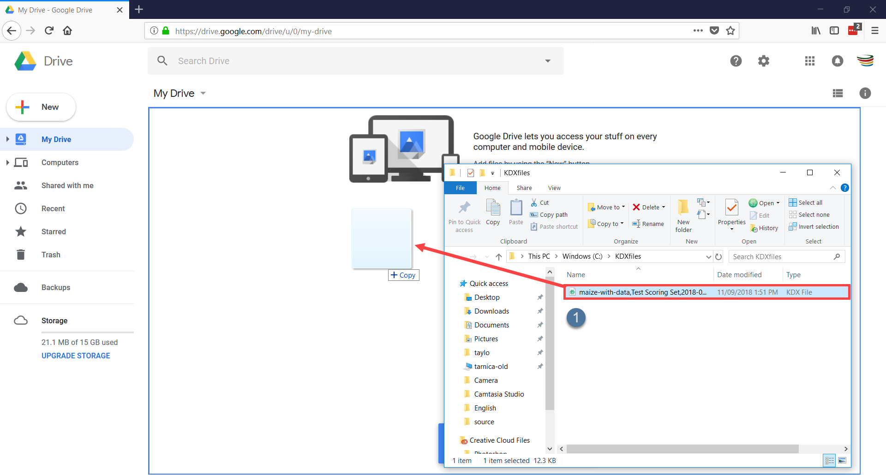
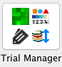
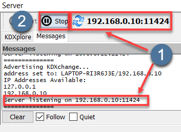
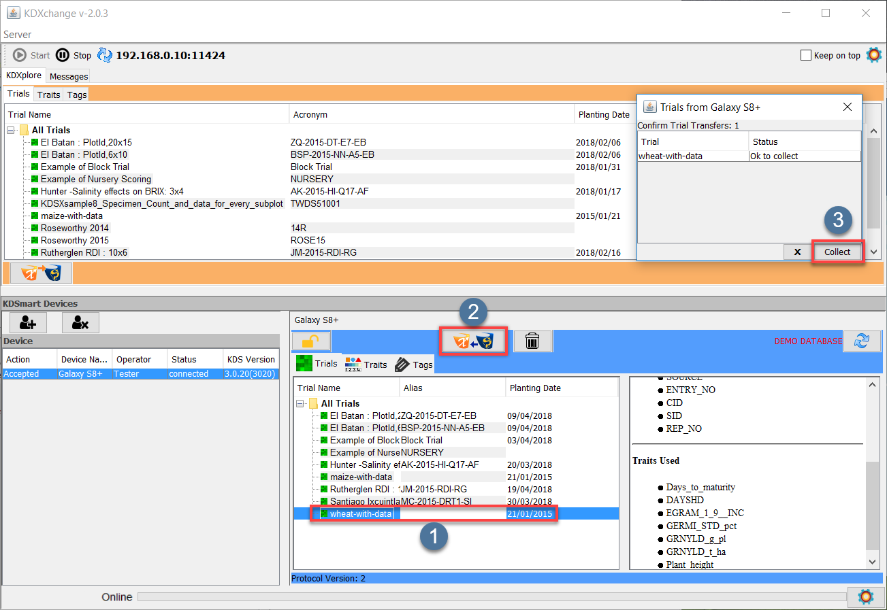

This topic focuses on using KDXplore with KDSmart, which provides more time saving and productivity benefits for the user. Previously, inbuilt software called KDXchange was used to transfer data between KDXplore and KDSmart. Both applications have recently been updated to include integration with Google Drive which requires much less effort in setup. Whilst an internet connection is required, both devices do not need to be on the same Wi-Fi network. Google Drive is now the recommended method, however, there may still be a need to use KDXchange so both methods are outlined here.
The following sections outline the steps required for exchanging data between KDSmart and KDXplore:
Setup - Connecting KDXplore to KDSmart Devices; and
Transfer - Moving data (Trials, Traits and Tags) between KDSmart and KDXplore.
Google Drive is a quick and easy way of exchanging data between devices and requires little setup time. The example provided will take you from exporting a Scoring Set from KDXplore to Google Drive, importing it into KDSmart, exporting the Scored Data file to Google Drive, and then importing that file into KDXplore for curation.
The process of exchanging data will be described in the following steps:
Connect to the Internet
Google Drive Setup
Transferring Files from KDXplore to Google Drive
Transferring Files into KDSmart from Google Drive
Transferring Files from KDSmart to Google Drive
Transferring Files into KDXplore from Google Drive
Google Drive transfers will only work when devices are connected to the internet but they do not have to be connected at the same time. For example, a user on KDXplore may export a Scoring Set to Google Drive which is uploaded to their personal folder, turn off their computer, and then go out into the field and import that Scoring Set into to KDSmart. For users who do not have mobile data on their KDSmart device or are in an area that does not have signal, it will still be necessary to connect to WiFi.
For further information on setting up WiFi please see the Step 1 - Using WiFi section below.
As well as having an internet connection, you will need to have a Google account which gives you access to Google Drive. A free account will provide 15gb of space which is more than enough for using with KDXplore and KDSmart. To sign up or access Google Drive see the following page: https://www.google.com/drive/.
This link will be usable on KDXplore, Android devices should have a Google Drive application that would usually be already installed by default but can also be found in the Google Play Store.
Step 3 - Transferring Files from KDXplore to Google Drive¶
Once a Trial, Trait or Tag has been created, it needs to be transferred to a KDSmart device for use in the field. The following instructions demonstrate how to transfer Trials (or other data) from KDXplore to Google Drive so that they can be used in KDSmart.
Ensure that Google Drive is opened in an internet browser and have KDXplore open to prepare for the transfer.
2.
Choose a Scoring Set such as the one at and then select the Export button at .
3.
The Export window displays (as at ) which provides export options. Select the Browse button to choose a location on the computer to save the Scoring Set to. Ensure that the radio button for KDX file is selected so that it is ready to be used in KDSmart.
4.
Select either the Export or the Export & Close options within the Export window and the KDX file will be exported to your chosen location. A dialogue opens and asks whether you want to open the containing directory - do this if you want to transfer the file to Google Drive immediately.
5.
Click+drag the file into the web browser with Google Drive opened and drop it to complete the upload. The file should now appear in Google Drive and there is a message which confirms that the upload has been completed.

Uploading Files to Google Drive (select to zoom)
Step 4 - Transferring Files into KDSmart from Google Drive¶
Files that are uploaded to Google Drive from KDXplore need to be imported into KDSmart. The following steps will demonstrate how to open Google Drive on your device and choose files to be imported into KDSmart.
Step 5 - Transferring Files from KDSmart to Google Drive¶
Once data is collected by scoring with KDSmart, the data needs to be transferred to KDXplore for curation. Step 5 will demonstrate how to transfer scored data for KDXplore using Google Drive.
On the Trials screen in the above image, ensure that the Scored Trial that you want to transfer is selected and then choose the Options button at and then the Share option at .
2.
The Choose Export Option window is then displayed as seen in the image below. Select the Full Data for KDXplore option at .
Transferring a Trial 2/5
3.
You will be presented with options for sharing the KDX file. Select the Save to Drive option at in the below image.
Choose the Save to Drive to display options for saving the file as seen in the below image. Select the Save option at when you are ready to save the file to Google Drive.
Once the file has been saved, confirmation notifications are displayed on the device as seen in the below image. This indicates that the Scored Trials are now stored in Google Drive.
Ensure that Google Drive is opened. If it is not, then there is a Google Drive button in KDXplore which opens it in a browser. This button is located at in the above image.
2.
Choose any file such as the one located at . Right-click this file and then choose the Download option. This downloads the file to the default location for your browser (e.g. The Downloads folder).
3.
Click+drag the downloaded file (such as the one in the below image) to the Trials panel in KDXplore. This displays the Load Trial Data window at . The Download button can also be selected to display the Load Trial Data window.
Loading Trial Data (select to zoom)
4.
Select/highlight the file you want to import, select a Source device, and then enter the Name of the Device User.
5.
Select the Import button at to complete the import.
Whilst the Google Drive method is now the recommended method for exchanging data between KDXplore and KDSmart, KDXchange is still provided as a backup method for exchanging data.
KDXplore and KDSmart devices connect and synchronise data using a WiFi network.
The KDSmart device(s) and the KDXplore laptop/PC must be connected and visible to each other on the same network (i.e. same wifi connection). This is a networking requirement and not a limitation of KDSmart/KDXchange.
Note
Depending on the network configuration, there may be times when your PC/Laptop is connected to a wired network (not on WiFi) yet will be able to connect to KDSmart devices on WiFi.
Tip
Many organisational IT policies lock computer settings preventing the setup or activation of your own WiFi Hotspot without needing Administrator user access on the computer. Before travelling to ‘the field’ we suggest you prepare, test and become familiarised with this means of connecting devices. Seek support in your organisation if needed.
When a WiFi network is unavailable at your location, a portable WiFi hotspot can be created on your Laptop (if it has that capability). The connection can then be shared with your other KDSmart devices using KDXchange (see the above tip).
The KDXchange window can be found by opening KDXplore on a PC and then opening the Trial Manager module by selecting the  icon. Once the module is open, select the KDXchange Server icon.
The following image displays a section of the KDXchange screen highlighted to show the following areas:
Connection panel is where the options to connect devices are located. This includes the IP Address where the KDXchange server will be created.
KDXplore panel links KDXplore from the user’s computer. This means that the list of Trials, Traits, and Tags that are on the user’s version of KDXplore are displayed. The user will need to choose between either the Trials, Traits or Tags to be selected.
KDSmart Devices is a list of all the KDSmart devices that are connected to KDXchange or are available for connection. The image demonstrates that a device named ‘Galaxy S8+’ from the user named ‘Tester’ is currently connected.
Device is a panel which displays data from the currently connected KDSmart device.
KDXchange server software in KDXplore and KDSmart enables them to communicate and needs to be kept running on the pc/laptop until any synchronisation tasks between the devices has completed. Also, the devices should be kept in close proximity whilst connected. Once tasks have completed the KDXchange server can be stopped.
Step 2 - Starting the KDXchange server in KDXplore¶
Step
Action
2.1 (KDX)
On the Laptop/PC start KDXplore and select the Trial Manager icon.
2.2 (KDX)
Select the KDXchange Server icon at top of the Trial Manager window to open KDXchange.
2.3 (KDX)
Select the Start button ( or Shift Start to enter address and/or port number) which is located at on the above image.
2.4 (KDX)
The Network/IP Address and the Port number need to be confirmed.
The selected Network/IP Address in this example is different to that of another computer. The IP address of the computer running KDXplore (suggested by default), is usually fine but can changed if required. Select the OK button in the window at to confirm this IP Address. The Port Number usually should be left at the default setting, however, if it is changed, both KDSmart and KDXplore must have the same port number. Once OK has been selected, the window will disappear and the program will start listening for devices which means that it is scanning for available devices on the Wi-Fi network.
2.5 (KDX)
Once KDXplore is listening for devices, there will be a message displaying the IP address and port number at in the following image. By selecting the Stop button at , the user can stop KDXplore listening for devices.

KDXchange connection to KDSmart devices (select to zoom)
Step 3 - Preparing KDSmart Devices For Upload/Download¶
Step 3 involves connecting one or more KDSmart devices via WiFi with KDXplore on the laptop/pc.
These ‘connection’ steps are common to both Upload to KDXplore or Download from KDXplore and for Trials, Traits or Tags.
Step 3 - Connecting KDSmart devices to KDXplore’s KDXchange server¶
Step
Action
3.1 (KDX)
Ensure that the KDXchange server is listening for any KDSmart device(s) from the previous Part 2 steps (as demonstrated above).
3.2 (KDS)
From the home screen on each KDSmart device, select the appropriate Trials, Traits or Tags panel then select the Connect button as seen in then choose the KDXplore icon at .
Return to KDXplore on the PC/Laptop and at , the KDSmart device should appear as Pending which means it is ready to connect. To connect the device, select the Allow button shown at .
Allowing KDSmart devices (select to zoom)
3.5 (KDX)
A dialogue box then opens which asks for information about the device as seen in the following image:
When a WiFi connection between KDSmart device(s) and KDXplore is established the power saving options on the device(s) may be overridden and the devices could remain on. If needing to conserve battery power on the phone/tablet/laptop, it may be advisable to stop the connection once data transfers have been completed.
Select an item e.g. the Trial named ‘wheat-with-data’ that is shown at in the above image.
2.
Once the item is highlighted, select the KDXchange Server icon at to start the transfer of data. Another method of choosing files to transfer is to click+drag an item such as a Trial to the KDSmart device. This method of transfer can work for single files, or for bundles of Trials, Traits, or Tags.
3.
The Dataset Upload window opens and files that have been selected will appear in it. The purpose of this window is to confirm the upload of datasets. Select the checkbox as seen at and then select the OK button at to finalise the upload.
The steps outlined in the following image and table describe how
to transfer Trials, Traits, or Tags from KDSmart to KDXplore when they
are connected using KDXchange.

Transfer Steps - KDSmart to KDXplore (Select to zoom)
Select an item e.g. the Trial named ‘wheat-with-data’ that is shown at in the above image.
2.
Once the item is highlighted, select the KDXchange Server icon at to start the transfer of data. As with the KDXplore to KDSmart transfer, files can be transferred by click+drag.
3.
A Confirmation window should appear. Select the Collect button at which will confirm the transfer and the Trial is then be copied into KDXplore.
If disconnection is unintended, select the X button to dismiss the message and
continue, otherwise, select the tick to confirm.
Disconnection can also be achieved using the Stop button adjacent to the Run button in the below image. Either method will return KDSmart
to normal operation and close the connection.
After disconnection of KDSmart device(s) the KDXchange server will still be running on the PC/Laptop. Whilst this is still running reconnection of a device can be quickly achieved.
The KDXchange server can be stopped when data transfers is finished.
{kind=link}
{kind=link}
{kind=link}
{kind=link}
{kind=link}
{kind=link}
{kind=link}

{kind=link}
{kind=link}
{kind=link}
{kind=link}

{kind=link}
{kind=link}
{kind=link}
{kind=link}
{kind=link}
 Connection panel is where the options to connect devices are located. This includes the IP Address where the KDXchange server will be created.
Connection panel is where the options to connect devices are located. This includes the IP Address where the KDXchange server will be created. KDXplore panel links KDXplore from the user’s computer. This means that the list of Trials, Traits, and Tags that are on the user’s version of KDXplore are displayed. The user will need to choose between either the Trials, Traits or Tags to be selected.
KDXplore panel links KDXplore from the user’s computer. This means that the list of Trials, Traits, and Tags that are on the user’s version of KDXplore are displayed. The user will need to choose between either the Trials, Traits or Tags to be selected.{kind=link}
{kind=link}
{kind=link}

{kind=link}
{kind=link}
{kind=link}
{kind=link}
{kind=link}
{kind=link}
{kind=link}
{kind=link}